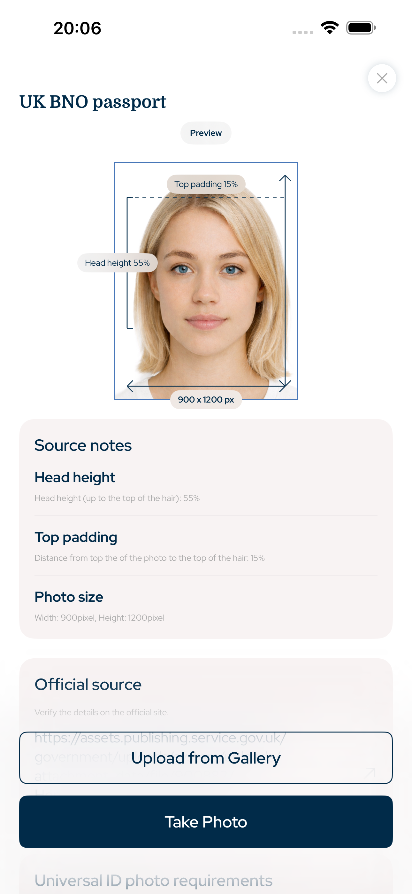

International · passport photo app, ID photo app, visa photo maker, residence permit photo, driving licence photo, biometric photo
Passport and ID photos matched to official size rules
This iPhone app prepares passport photos, visa photos, ID card photos, residence permit photos and driving licence photos with precise crop, head proportion, top padding, background and export size controls.
- Face
- No AI alteration
- Crop
- Head + top padding
- Export
- Digital + print

Top padding
precise
Head proportion
guided
Searchable requirements
Built around official photo geometry
The app focuses on measurable document-photo rules: photo size, pixel export, head height, face position, top padding, background and print layout.
Head proportion and top padding guidance
No AI face changes or facial alteration
JPG, digital upload and print sheet export
International document types
Photos this app can prepare
Passport Photo App for iPhone covers common official photo workflows for iPhone users who need a digital upload file or a printable photo sheet.
Passport photo
Visa photo
ID card photo
Residence permit photo
Driving licence photo
Photo integrity
No AI facial alterations
The workflow is intentionally practical: crop the image, align the head, preserve the face, prepare the background, then export the right size. It is made for official document photo preparation, not beauty retouching.
1Select country and document
2Align head and padding
3Export digital or print sheet
Questions
FAQ
Does the app alter my face with AI?
No. The app is designed for cropping, sizing, background preparation and export. It does not reshape, beautify or change facial features.
Can I use it for official document photos?
Yes. Choose the country and document type, then export a photo sized for that requirement with matching crop, head proportion and padding.
Can I print the photo?
Yes. You can export a single digital photo or a print-ready sheet for local photo printing.
Passport Photo App for iPhone
Create passport, visa, residence permit, ID card and driving licence photos on iPhone with exact photo size, head proportion, top padding and print-ready export.
Download on the App Store